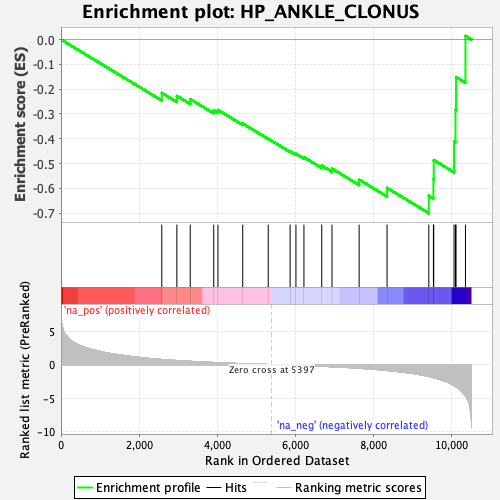
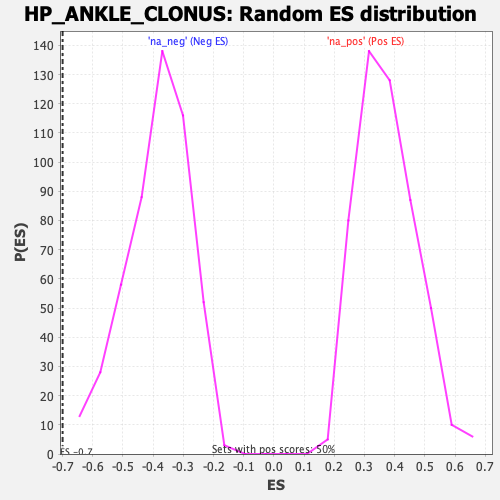

| Dataset | qlf.KOd4vsWTd4_gsea_score |
| Phenotype | NoPhenotypeAvailable |
| Upregulated in class | na_neg |
| GeneSet | HP_ANKLE_CLONUS |
| Enrichment Score (ES) | -0.7000582 |
| Normalized Enrichment Score (NES) | -1.8181083 |
| Nominal p-value | 0.0 |
| FDR q-value | 0.039257865 |
| FWER p-Value | 0.888 |

| SYMBOL | RANK IN GENE LIST | RANK METRIC SCORE | RUNNING ES | CORE ENRICHMENT | |
|---|---|---|---|---|---|
| 1 | SOD1 | 2580 | 0.764 | -0.2153 | No |
| 2 | STUB1 | 2966 | 0.607 | -0.2276 | No |
| 3 | SPAST | 3308 | 0.489 | -0.2405 | No |
| 4 | ERLIN2 | 3910 | 0.314 | -0.2851 | No |
| 5 | GFM2 | 4018 | 0.283 | -0.2839 | No |
| 6 | ANO10 | 4652 | 0.135 | -0.3389 | No |
| 7 | SLC39A14 | 5305 | 0.018 | -0.4003 | No |
| 8 | PIGT | 5865 | -0.073 | -0.4507 | No |
| 9 | HTT | 6014 | -0.099 | -0.4608 | No |
| 10 | GBA2 | 6219 | -0.138 | -0.4747 | No |
| 11 | RAB18 | 6675 | -0.243 | -0.5083 | No |
| 12 | SPG11 | 6937 | -0.311 | -0.5207 | No |
| 13 | SLC52A3 | 7632 | -0.545 | -0.5649 | No |
| 14 | ZFYVE27 | 8347 | -0.866 | -0.5982 | No |
| 15 | FGF13 | 9416 | -1.748 | -0.6298 | Yes |
| 16 | ABCD1 | 9534 | -1.926 | -0.5635 | Yes |
| 17 | CAPN1 | 9542 | -1.947 | -0.4859 | Yes |
| 18 | SAMD9L | 10062 | -3.100 | -0.4108 | Yes |
| 19 | ATP6AP2 | 10099 | -3.252 | -0.2835 | Yes |
| 20 | PSAP | 10113 | -3.316 | -0.1515 | Yes |
| 21 | SYNE1 | 10354 | -4.703 | 0.0147 | Yes |
